Εργασιακή Εμπειρία
System Administrator (Πρακτική) - Lancom
Ltd. (Νοε. 2022 - Μαϊ. 2023)
* Διαμόρφωση, διαχείριση και συντήρηση αρκετών διακομιστών Linux, Windows και ESXi και
συστάδων διακομιστών σε περιβάλλοντα production και development.
* Διαχείριση και συντήρηση κοινών υπηρεσιών, όπως DNS, webservers, mailservers, βάσεις
δεδομένων, monitoring, fileservers, AD/LDAP, και αυτοματοποιημένη λήψη αντιγράφων ασφαλείας,
τόσο σε «bare-metal» όσο και σε Docker και Kubernetes.
* Εγκατάσταση και συντήρηση κοινών διαμορφώσεων δικτύωσης, όπως VPN, αντισταθμιστών φορτίου,
proxies, NAT, IPSec, και VoIP.
* Παροχή διαχειριζομένων υπηρεσιών και τεχνικής υποστήριξης σε πελάτες
* Παροχή υποστήριξης QA και αναφορών σφαλμάτων για τον πίνακα "myLancom"
* Συγγραφή εγγράφων τεκμηρίωσης, με άμεση συνέπεια τη βελτίωση της αποτελεσματικότητας των
διαδικασιών
* Διοίκηση και εκπαίδευση άλλων πρακτικαρίων
 System Administrator - Aristotle Space & Aeronautics
Team (Ιαν. 2021 - Σεπ. 2022)
System Administrator - Aristotle Space & Aeronautics
Team (Ιαν. 2021 - Σεπ. 2022)
* Διαχείριση των υπηρεσιών της ομάδας με υψηλή απόδοση και αξιοπιστία (>99.85% uptime)
* Συμμετοχή στο σχεδιασμό και την ανάπτυξη διαδικτυακών εφαρμογών που ανταποκρίνονται στις
ανάγκες της ομάδας.
* Εγκατάσταση και τακτική ενημέρωση όλων των βοηθητικών προγραμμάτων SaaS της ομάδας
* Διαχείριση και διασφάλιση διαφόρων διακομιστών Linux και υπολογιστικών περιβαλλόντων,
συμπεριλαμβανομένων υπηρεσιών όπως Apache2, Nginx, MySQL, OpenLDAP
* Παροχή γρήγορης υποστήριξης ΙΤ
* Διαχείριση του τμήματος IT της ομάδας, εκπαίδευση νέων μελών και συγγραφλη τεκμηρίωσης IT για
μελλοντικ@ SysAdmins της ομάδας
Προκειμένου να υπάρξει ομαλή παράδοση, ο ρόλος μου στην ομάδα από τον Απρίλιο του 2022 έως τον
Σεπτέμβριο του
2022 ήταν κυρίως συμβουλευτικός και συμπληρωματικός.
Avionics Engineer - Aristotle Space & Aeronautics
Team (Νοε. 2019 - Μαρ. 2021)
* Έρευνα και προγραμματισμός αισθητήρων σε C++
* Σχεδιασμός και συναρμολόγηση πλακέτας αισθητήρων
* Έρευνα και εφαρμογή συστήματος αυτόματου πιλότου
* Ανάπτυξη λογισμικού υπολογιστικών εργαλείων
* Συγγραφή τεχνικών εγγράφων σχετικά με τη διαδικασία ανάπτυξης, καθώς και δημιουργία και
συντήρηση ενός συστήματος ταξινόμησης εγγράφων για ευκολότερη διαχείριση και αρχειοθέτηση αυτών.
 Autonomous Vehicles Engineer - AutoROS Team
(Οκτ. 2019 - Ιούλ. 2020)
Autonomous Vehicles Engineer - AutoROS Team
(Οκτ. 2019 - Ιούλ. 2020)
* Ανάπτυξη λογισμικού ROS σε C++ και Python
* Έρευνα και προγραμματισμός αισθητήρων
* Συντήρηση των αυτόνομων οχημάτων
* Δημιουργία εγχειριδίου ROS για τα μελλοντικά μέλη της ομάδας
* Δημιουργία και ενημέρωση εγγράφων «ποιότητας ζωής» για την ομάδα
Εκπαίδευση
 Μηχανικών Αυτοματισμού T.E. - ΔΙΠΑΕ (Σεπ. 2018 -
Ιούν. 2023)
Μηχανικών Αυτοματισμού T.E. - ΔΙΠΑΕ (Σεπ. 2018 -
Ιούν. 2023)
Αποφοίτησε ως αριστούχος, με τον υψηλότερο μέσο όρο βαθμολογίας μεταξύ 63 φοιτητών για το
ακαδημαϊκό έτος 2022-2023.
* Εφαρμογή των επιστημονικών και τεχνολογικών μεθόδων σχεδιασμού, ανάπτυξης, κατασκευής και
λειτουργίας ηλεκτρικών, ηλεκτρονικών, υπολογιστικών, υδραυλικών και πνευματικών μηχανών, καθώς
και του αυτόματου ελέγχου τους, και σύνταξη ή επίβλεψη μελετών για έργα που αφορούν τα ανωτέρω.
* Εκτίμηση και επιμέτρηση έργων τα οποία ανήκουν σε συστήματα που περιέχουν στοιχεία αυτόματου
ελέγχου και πραγματογνωμοσύνες σε εγκαταστάσεις συστημάτων από τα ανωτέρω.
* Χρήση, προγραμματισμός, συντήρηση, ρύθμιση και προσαρμογή ηλεκτρονικών υπολογιστών,
μικροϋπολογιστών, μικροελεγκτών, PLC, CNC, ρομποτικών συσκευών και γενικού εξοπλισμού που
εφαρμόζει μεθόδους και αλγόριθμους αυτόματου ελέγχου.
Τίτλος πτυχιακής: Μετρήσεις σκέδασης με τον μικροϋπολογιστή Beaglebone για φορητούς οπτικούς
βιοϊατρικούς αισθητήρες
[Περισσότερες πληροφορίες]
Licenses, Certifications, and Awards
 Πιστοποίηση 3CX Advanced (2023-)
Πιστοποίηση 3CX Advanced (2023-)
* Απονέμεται από την Ακαδημία 3CX για την επιτυχή ολοκλήρωση των μαθημάτων Basic, Intermediate
και Advanced 3CX και για την εγκατάσταση ενός πλήρως λειτουργικού τηλεφωνικού κέντρου 3CX.
 Δίπλωμα Αρχηγού Χ.Α.Ν.Θ. (2016-)
Δίπλωμα Αρχηγού Χ.Α.Ν.Θ. (2016-)
* Απονέμεται από τη ΧΑΝΘ για την επιτυχή ολοκλήρωση του τετραετούς εκπαιδευτικού προγράμματος
της Σχολής Στελεχών.
 CTY Greece Talent Search Award (2013-)
CTY Greece Talent Search Award (2013-)
* Απονέμεται από το Κολλέγιο Ανατόλια Θεσσαλονίκης εκ μέρους του «Center for Talented Youth» του
Πανεπιστημίου Johns Hopkins, για υψηλή διάκριση στη λεκτική και ποσοτική ικανότητα και για το
γεγονός ότι ήταν μεταξύ των συμμετεχόντων με την υψηλότερη βαθμολογία κατά τα ακαδημαϊκά έτη
2013-2015.
 Certificate of Competency in
English (ECCE) (2012-)
Certificate of Competency in
English (ECCE) (2012-)
* Εκδίδεται από το Πανεπιστήμιο του Michigan ως επίσημη πιστοποίηση της γνώσης της αγγλικής
γλώσσας.
Τα αγγλικά είναι ούτως ή άλλως η δεύτερη μητρική μου γλώσσα, οπότε αυτό το πιστοποιητικό
διατίθεται κυρίως για να αποφύγω τη γραφειοκρατία
Volunteering
Τοπική Οργανωτική Επιτροπή - 1η
Βαλκανική Ολυμπιάδα Φυσικής (Ιούλ. 2019)
Παροχή οργανωτικής και κοινωνικής βοήθειας προς τη Βαλκανική Φυσική Ένωση και την Ένωση Ελλήνων
Φυσικών για τη διοργάνωση της 1ης Βαλκανικής Ολυμπιάδας Φυσικής
 Σχολικός
Διαμεσολαβητής
Σχολικός
Διαμεσολαβητής
Συμμετοχή στην ομάδα σχολικής διαμεσολάβησης του λυκείου μου και παροχή υπηρεσιών διαμεσολάβησης
τόσο σε μεμονωμένους μαθητές όσο και ομάδες μαθητών, με σκοπό την επίλυση των διαφορών τους
Δημοσιεύματα
Πτυχιακή
** Μετρήσεις σκέδασης με τον μικροϋπολογιστή Beaglebone για φορητούς οπτικούς βιοϊατρικούς αισθητήρες, Μ. Μιχαηλίδου, Α. Μπαντής (2022)
Proceedings
* Fabrication and Development of an Optical Biomedical Sensor, A. Bantis, M. Michailidou, E. Gkagkanis, K. Karakostas and M. E. Kiziroglou (21WOM-05)
* From Microtechnology to Nanotechnology, D. Bagdatoglou, N. Balp, A. Bantis, R. Beal, Y. Carmichael, C. I. Danaskou, K. Georgiadis, M. Michailidou, A. Nikolopoulos, S. Ntemkas, D. Parastatidou, V. Petitjean, H. Schaefer and N. Traikoudis (20WOM-04)
Γλώσσες
* Ελληνικά (Μητρική)* Αγγλικά (Μητρική)
* Πολωνικά (A2)
* Γαλλικά (A2)
Δεξιότητες
C, C++, Python, BASH, Ruby, Ansible, PHP, SQL, Γλώσσες PLC (LD, FBD, ST), BASIC, AVR Assembly, ARM Assembly, HTML/CSS, LaTeX, ROS, AutoCAD, Solidworks
GNU/Linux, Windows Server, Docker, Kubernetes, Apache2, NGINX, IIS, HAProxy, Postfix, Exim4, Dovecot, BIND9, MySQL, PostgreSQL, MS-SQL, MongoDB, ElasticSearch, ClamAV, Grafana, Prometheus, InfluxDB, Zabbix, Graylog, Active Directory, LDAP, Hyper-V, VMWare, Veeam, S3, Hosting Panels, 3CX
Διαχείριση συστημάτων, Κυβερνοασφάλεια, Διασφάλιση Ποιότητας, Ενσωματωμένη Μηχανική, Ηλεκτρολογική Μηχανική, IT Operations, Δίκτυα, Προγραμματισμός, Βάσεις Δεδομένων, DevOps, Ηλεκτρονική, Αυτόνομα Οχήματα, Σχεδιασμός με τη Βοήθεια Υπολογιστών, Αυτοματισμός, Συστήματα Ελέγχου, Μικροσυστήματα, Διοίκηση Έργων
Εργατικότητα, Ομαδική Εργασία, Περιέργεια, Γραπτή Επικοινωνία, Υπευθυνότητα, Επίλυση Προβλημάτων, Δημιουργικότητα, Multitasking
Ενημερώθηκε: 2023-07-10